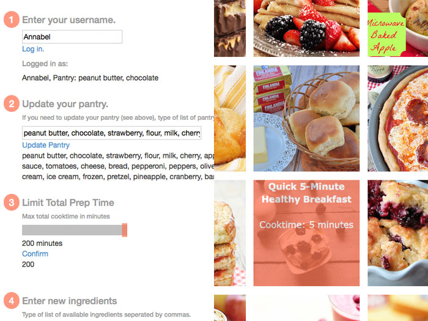
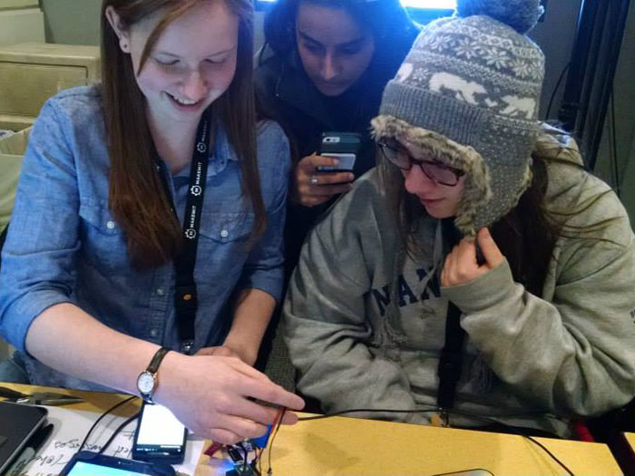
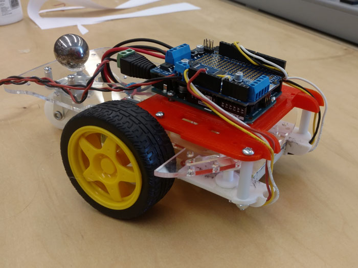

I'm a developer and designer based in Boston, MA.
Hey there. I'm Annabel.
Bonus Projects

The Acessible Icon Project
During the spring of 2015, I had the opportunity to design an intermediate website for the Accessible Icon Project alongside Sara Hendren. The design was intended to foster communication and bring together the global Accessible Icon community. The website was redesigned in the Spring of 2016 to reflect the new mission of the project. I designed the website in Wordpress to allow for easy uploading of new posts for multiple members of the organization.

Coming Clean: Shampoo Infographic Book
During the spring of 2016, I worked with two other Olin students to research and design a book of infographics on the ingredients and process of making shampoo. We researched everything from the chemistry of why shampoo works to which ingredients are harmful to aquatic life. This project was completed over four weeks for a chemistry class at Olin College and was developed in Adobe Illustrator. See the whole book here.

Rapid Recipes
During the Spring of 2015, I worked with a group of three to create an app that generates recipes based on what ingredients you have available in your kitchen. The app has a very preliminary login system that allows you to store things in your “pantry” between logins and also has a secondary area where you can add food items that are perishable or not always available. Using these ingredients and a cooking time that you also input, our program searches the Yummly API and returns to you every recipe in their database that you can make. We created this program using Python, Flask, and MongoDB. I worked on both the python back-end of the application, connecting the API functionality, and the basic front-end styling. Check out the Github.
Project Liberty: Safe Alert Bracelets
During the 18-hour MakeMIT hackathon in Febuary 2015, I helped to design and develop a bracelet that communicated via bluetooth with an Android app on a team of four. The purpose of the bracelet was for college students to be able to discreetly send a text message or make an emergency call with just a push of a button if they felt in danger. I worked with another teammate as a developer of both the mobile application that set up the emergency contacts and the Android code. At the end of the 18 hours, the prototype was fully functional but not quite as discrete as we were hoping due to the size of the arduino and other electrical part that were needed. In the future, we would like to move these electrical parts onto a PCB and change the material of the bracelet to allow for a more discreet and comfortable experience.
Line Following Car
During the fall of 2015, I worked with two other Olin students to develop a small robot that followed a drawn out line using IR sensors. I focused primarily on the Arduino code and control algorithm for the robot. Here is a video and our github.